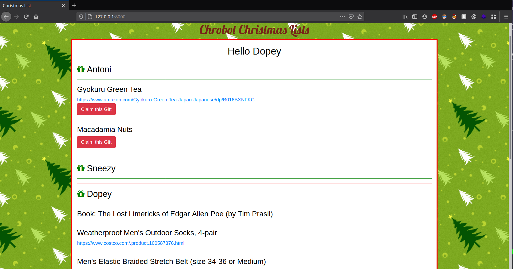

Christmas List Tracking web app
I am lucky to have the privilege of having two sisters, a brother, and a loving mother and father. One downside of having a large nuclear family is keeping track of everyones Christmas lists. With the six of us, it is tricky to keep track of who wants what, and who already made a purchase for someone.
To make things easier this year, my Dad gave me the idea of making a web application where we could all post our desired gifts, and keep track of which gifts have already been purchased.
I used Python Django as my web framework, along with a postgresql database, some bootstrap and CSS to make things pretty, and finally, I deployed my application using Heroku.
For my family's privacy, I will not post the live URL, but I will share screenshots and detail my development in this writeup.
User Login
For each family member I created a user account. Upon opening my web app, unauthenticated users are redirected to the login page. Once a user is logged in, a session is created for them, and they do not have to continue logging so long as they do not delete their session cookie.
{kind=link}
Home page
Upon logging in, the user is redirected to their Home page.
The Home page displays the lists for all users. From here the user can review everyones lists, and if they see a gift they want to get for someone, they can claim this gift by clicking the red Claim this Gift button. As can bee seen in the below screenshot, a user cannot claim their own gift. No red button appears under the users' gifts.
{kind=link}
Gift Claiming
Once a user claims a gift, the gift will be marked as claimed and all other users, with the exception of the requestor, will be able to see that a gift has been claimed. In addition to this, an email is sent to all users, with the exception of the requestor, stating that a gift has been claimed.
{kind=link}
In the prior screenshot, no gifts were claimed. The screenshot below demonstrates what users see after gifts have been claimed. The gift, Book: The Lost Limericks... is claimed by the logged in user, and the gift Weatherproof Men's Outdoor Socks, 4-pair is claimed by a different user. Notice that after claiming a gift, we have the option to Unclaim it.
{kind=link}
Two of Dopey's gifts have been claimed. Let's login as Dopey and see what their homepage looks like:
{kind=link}
Dopey has no idea that his gifts were claimed! No surprises will be spoiled on Christmas Day.
Creating a List
To manage a user's list, they can click on the My List link in the navigation bar. On this page, they can add and delete items from their list. When adding an item, there is an optional field 'Gift Link'. This makes finding online items that much easier for other users.

Account Settings
Users can also manage their accounts by clicking on the Account link in the navigation bar. Here they can set their email, and change their password.
{kind=link}
Future additions
Due to time constraints, I did not have time to implement all my desired features in this project.
For next year's edition, I'd like to add:
- User profile pictures
- Ability to view all the gifts that the current user claimed. This way they have an organized list of gifts they need to get